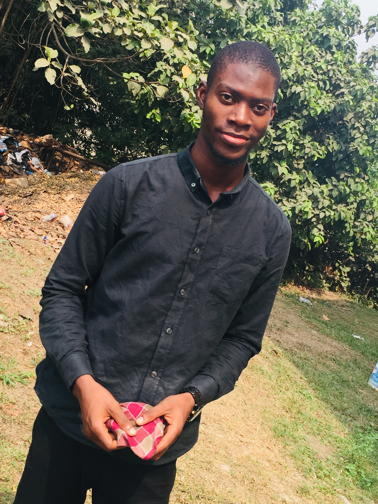
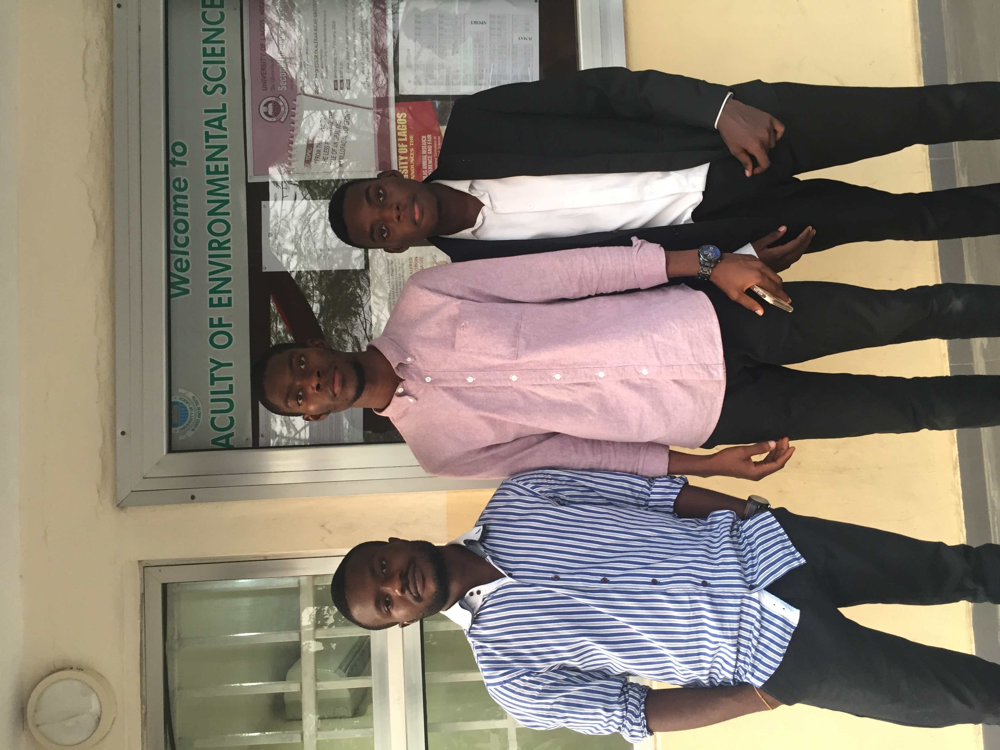
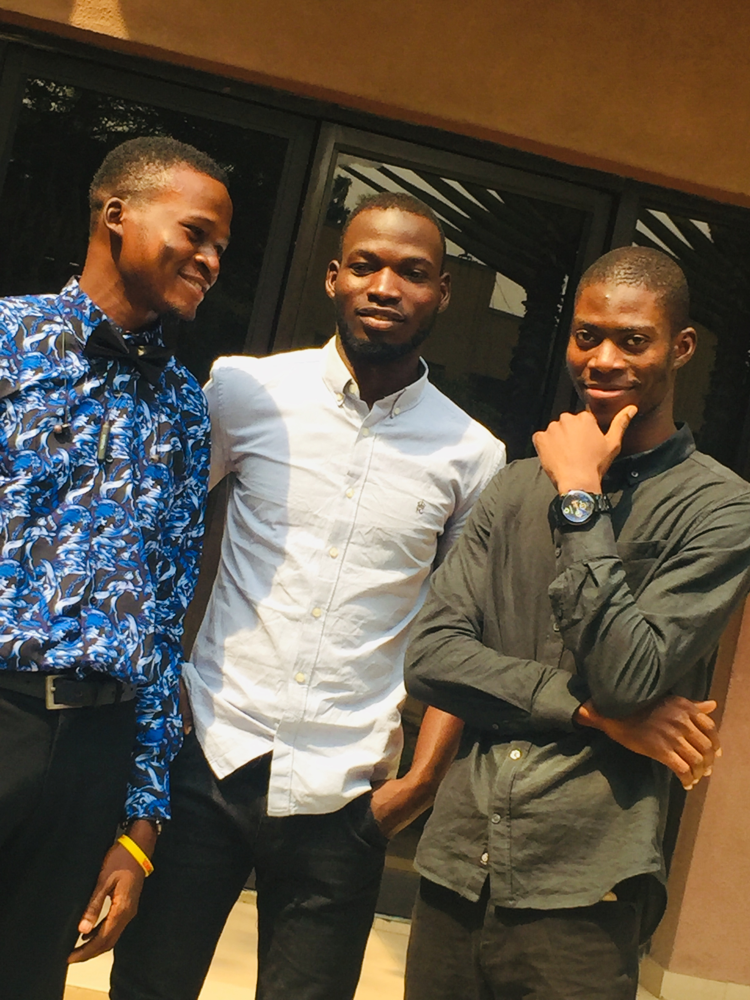
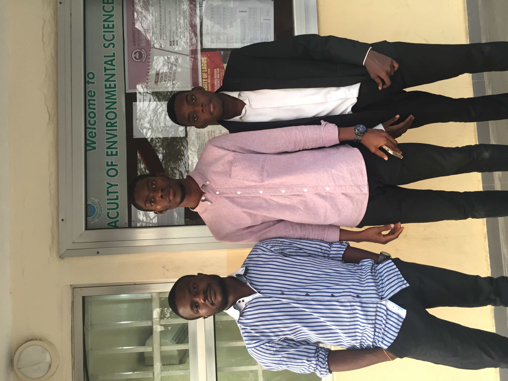
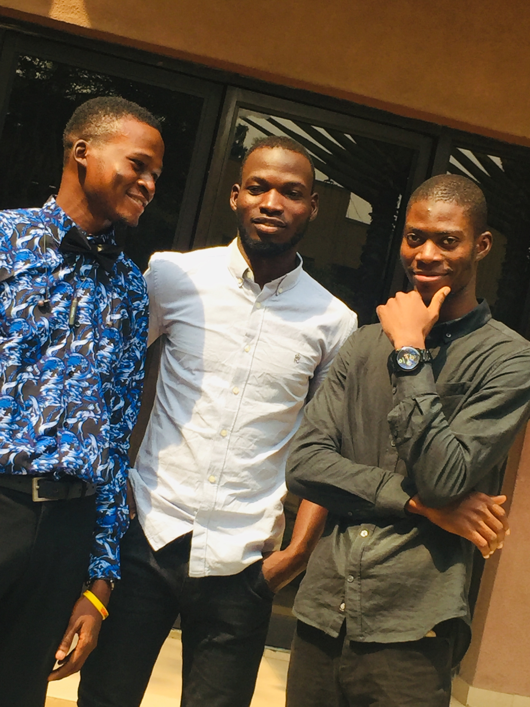
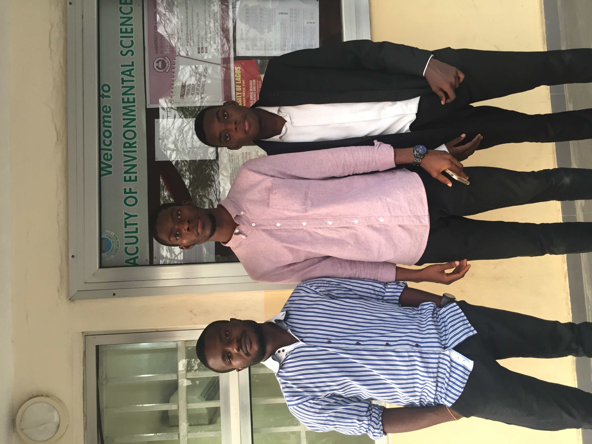
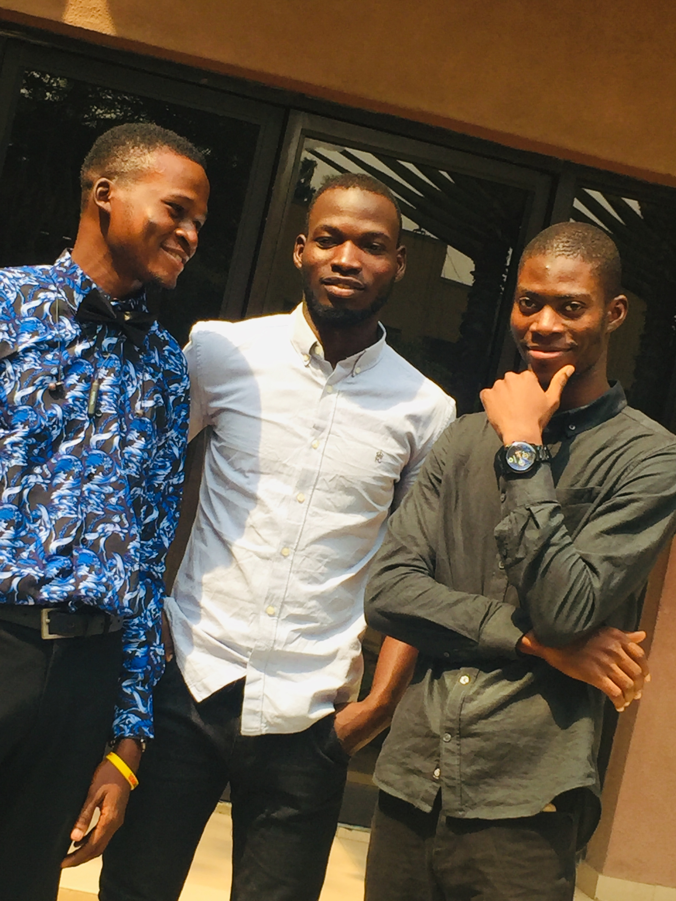

Name: Gbenga Showunmi
Applicant


 





CONTACT
Address: Oshodi, Lagos
Post code: 1002
Email: gbengalilmahn@gmail.com
Tel: 08135110104
PROFILE
Currently Employed: No
Date of Birth: 1995-03-15
Highest Level of Education: Undergraduate
Industry: Construction
NYSC Status: Ongoing
CAREER
- Web development online class Free code camp - Remote (August 2021) I've been learning the art of web development using HTML and CSS3 and I've been able to carry out 3 different projects which include 1 responsive website
-
Site engineer
Petbamok and co. Ltd - Lagos (June 2020 to January 2021)
I supervised from inception to completion the construction of a lawn tennis court and a swimming pool changing room owned by the CEO of Sparkle Nigeria. - Site engineer(IT)
Construction Kaiser Limited - Lagos(June 2019 to December 2019)
I was supervising construction activities and ensuring artisans carry out their jobs efficiently and correctly. -
Computer training (June 2012 to October 2012)
Beth manuel computer academy - Ogun
I was learning about repair and replacement of computer hardware and some installation software programs.
ACADEMIC
University of Lagos, Akoka - Lagos
BSc. Building
December 2015 to September 2021
Gateway polytechnic, Igbesa - Ogun
OND in Computer engineering
March 2011 to September 2013
Skills
- Web development using HTML5 and CSS3
- Microsoft Excel
- AutoCAD Software